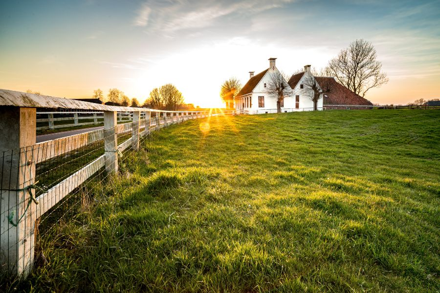
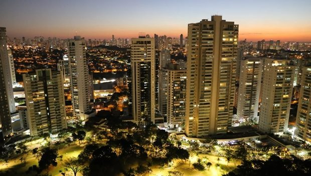

Um projeto que auxilia e incentiva os alunos a se interessar nas propriedades campestres; como a cidade auxilia o campo de diversas formas e o campo auxilia as cidades
O campo produz, a cidade transforma. Juntos, formam um globo complexo onde existem varios meios de oporunidades incriveis.
Campo:
Cidade:
1. Que maneiras os ois meios se auto-ajudam?
2. Como cada escolha atinge diretamente os associados e os proutores?